고서연 Ko Seo-yeon
미디어 현장에서 콘텐츠를 만들고 운영하며 실무에 대한 이해를 넓혔습니다.
현장에서 발견한 문제를 데이터와 AI 기술로 해결하는 기획자가 되고자 합니다.
- EDUCATION
- 건국대학교 신문방송학과 학점 4.2 / 4.5
- CERTIFICATE
- 데이터분석준전문가 (ADsP)한국데이터산업진흥원 · 2026.08
DEVELOPMENT
AI & AUTOMATION
MARKETING · DESIGN
COLLABORATION
Olist 이커머스 AI 분석
브라질 마켓플레이스 Olist의 주문 데이터로 EDA를 하고, 유사 상품 추천·리뷰 감성 분석·판매자 유형·이탈 예측 모델 4종을 만들어 Streamlit 대시보드로 서빙했습니다.
- 1회 구매 고객이 97%인 데이터 특성을 확인하고, 문제를 고객 → 상품·판매자로 재정의
- EDA 인사이트 10가지 도출 — 배송이 늦으면 평균 리뷰 4.30 → 2.57
- 판매자 2,502명을 K-Means로 4개 유형 군집, 이탈 예측 재현율 0.3 → 0.75 개선
- 저장한 모델 4개로 예측하는 Streamlit 3페이지 대시보드 배포
- 기간
- 2026.11
- 역할
- 데이터 분석·모델 학습·대시보드 서빙·배포
- 데이터
- Kaggle Olist 공개 데이터 (2016–2018)
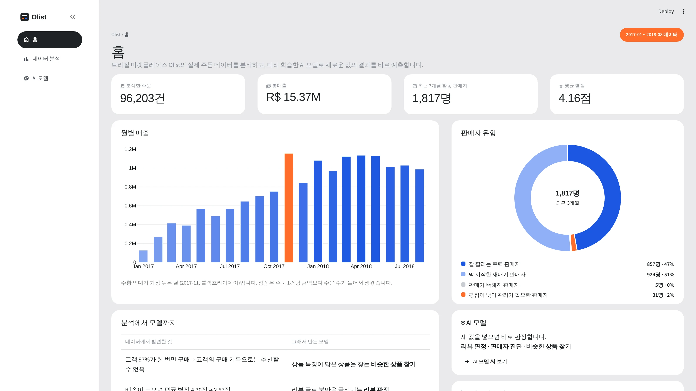
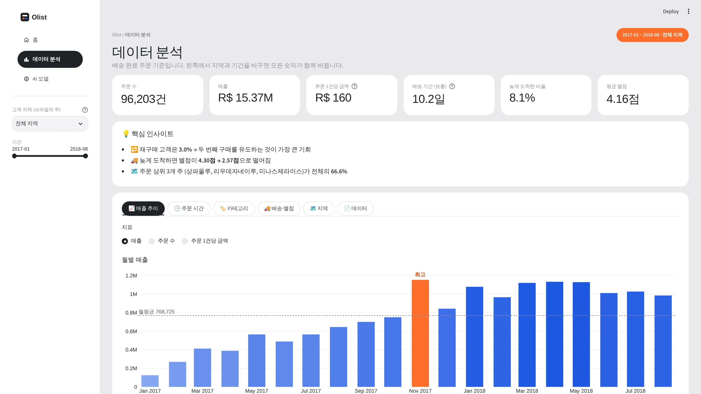
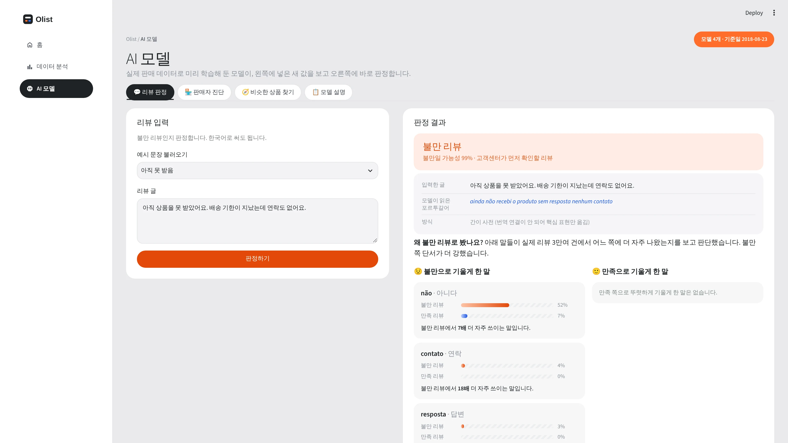
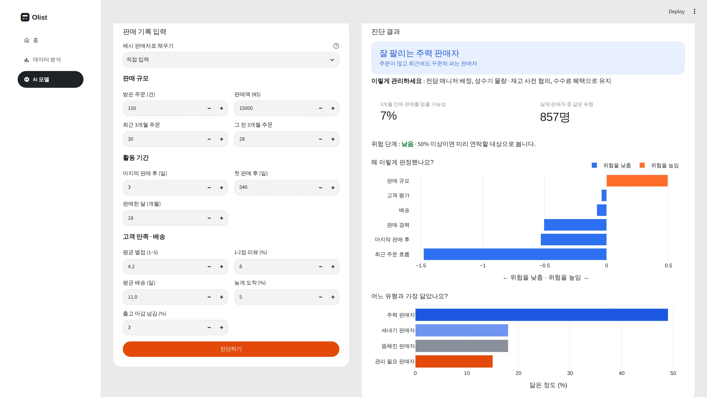
Olist 프로젝트 자료
방송 콘텐츠 성과 분석 대시보드
네이버 검색 관심도·RACOI 온라인 반응·유튜브 성과를 통합해 17개 방송 프로그램의 화제성 변화를 분석하고, AI로 프로그램별 콘텐츠 전략을 제안합니다.
- 3개 플랫폼 데이터 수집·통합과 시각화 대시보드 구현
- 주간 화제성 변화 비교, 유튜브 영상 유형별 운영 현황 분석
- OpenAI API로 프로그램별 전략 생성, 결과 90건 직접 검증
- 기간
- 2026.09.28 – 10.11
- 역할
- 1인 기획·데이터 분석·개발·배포
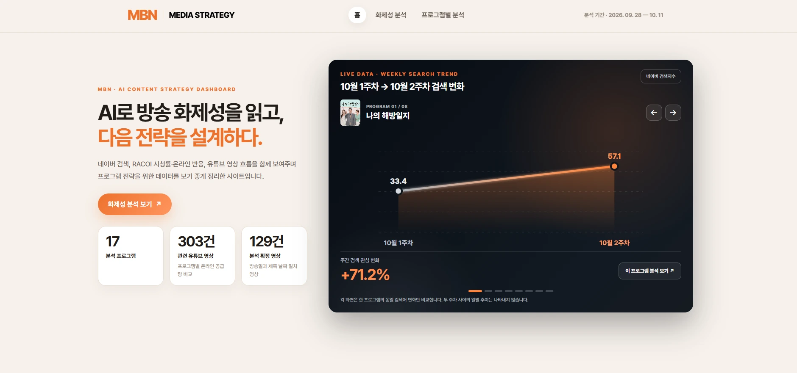
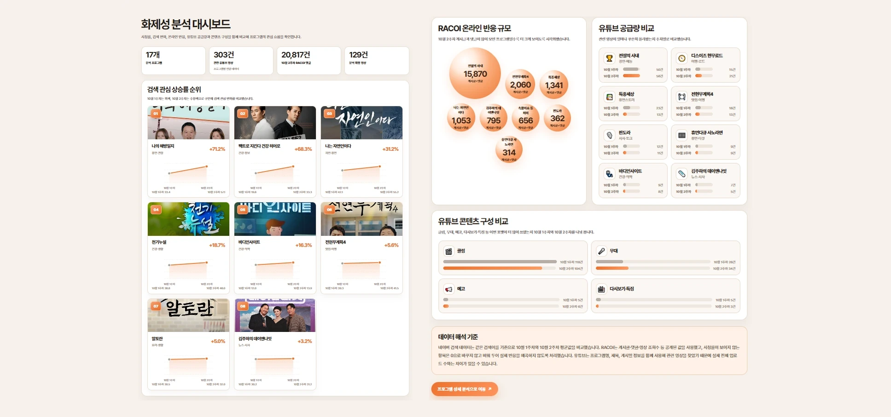
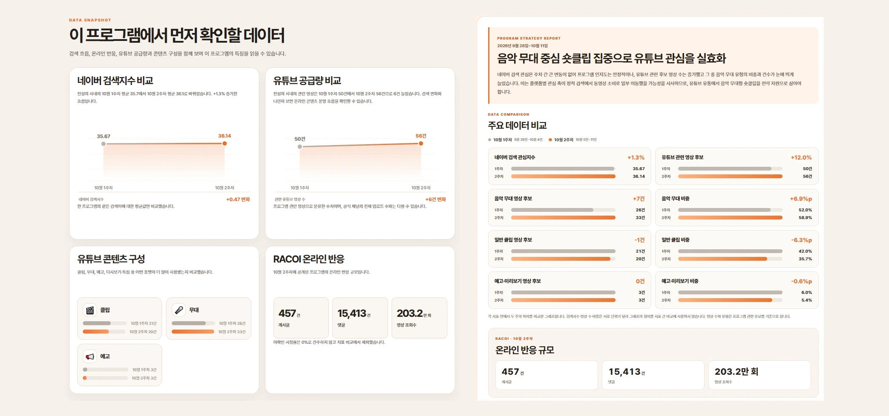
동네픽
서울 25개 자치구의 7개 분야 공공데이터를 통합해, 예산과 생활 성향에 맞는 동네 TOP 3를 추천하는 웹서비스입니다.
- 출처·단위가 다른 7개 분야 데이터(민원·주거·인구·상권·의료·교육·주차)를 자치구 단위로 통합
- 인구 보정·중앙값·정규화로 지역 간 공정한 비교 기준 설계
- 예산·생활 성향 가중치 기반 추천 알고리즘과 추천 근거 시각화
- 역할
- 데이터 분석·추천 기준 설계·웹 구현
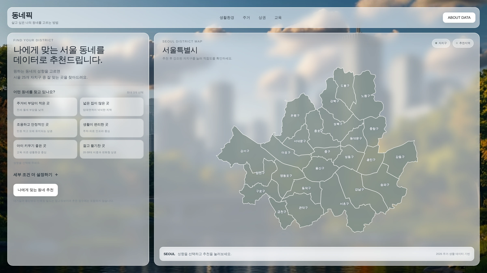
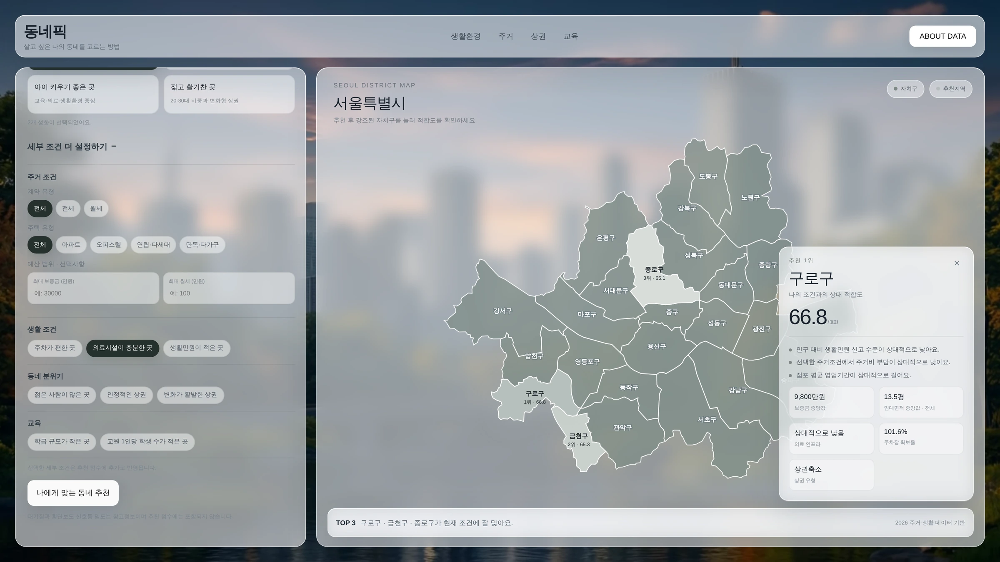
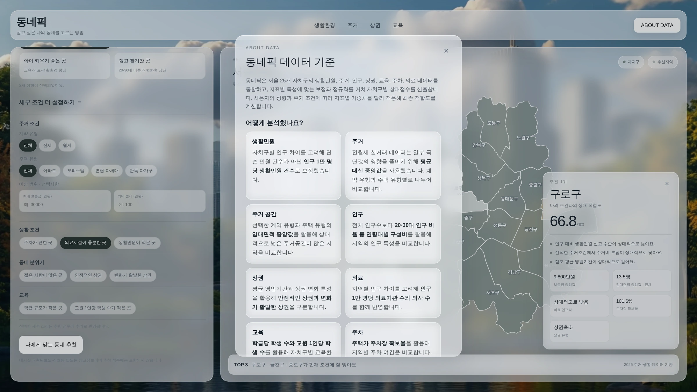
동네픽 프로젝트 자료
02 서비스 기획 및 개발
실제 사용자의 요구사항을 분석해 AI로 서비스를 개발하고, 사용자 테스트로 개선점을 도출합니다.
AI 기사 작성 프로그램
취재부터 작성·교정·배포까지 기자 업무를 하나의 프로그램 안에서 진행하는 AI 뉴스룸입니다.
현업 기자 9명 인터뷰로 기능을 설계했습니다.
- 동아일보 기사 46건 분석으로 부제 생성 규칙 10개 도출·4차례 개선 (줄당 28.5자 → 21.9자)
- 제목·부제 AI 모델(KeT5·KoBART)을 ONNX로 변환해 제목 생성 1.50초 → 0.48초
- 기사 작성·저장·송고·보관함, 사진 검색·편집 기능 담당
- 현업 기자 대상 대면 사용자 테스트 진행
- 기간
- 2026.09.17 – 11.11
- 역할
- 기사 작성·저장·송고, 제목·부제 AI, 사진
- 팀
- Team Finally 5명
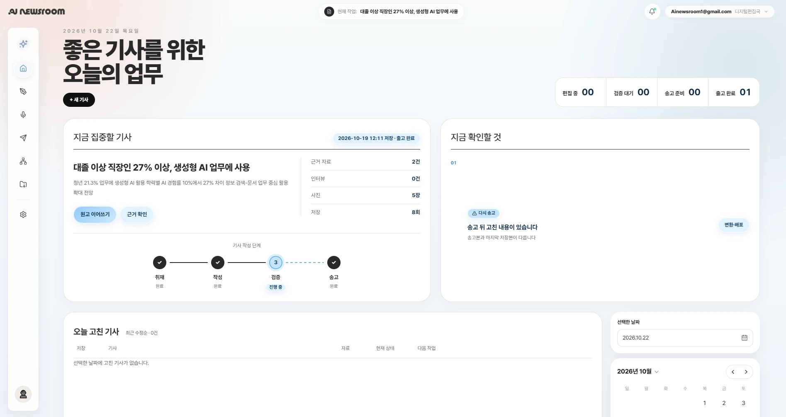
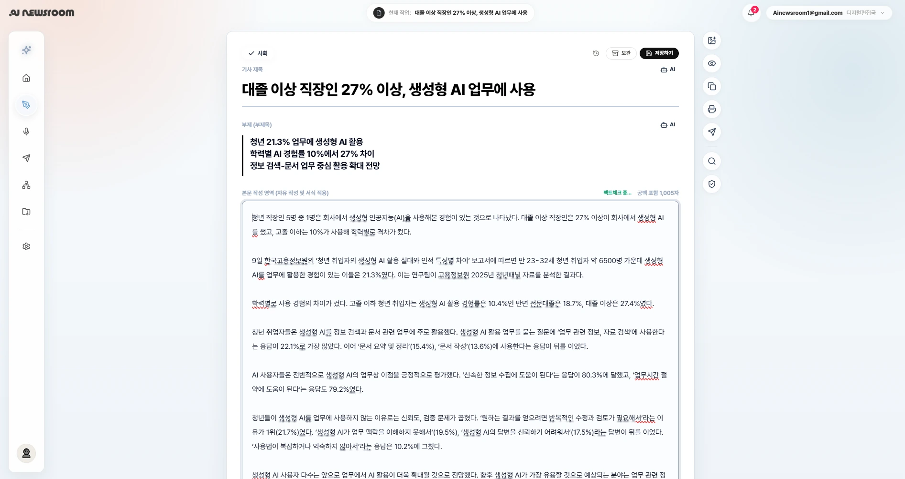
AI 자동화 웹 개발
광고 영상 기획·카피라이팅
 ▶
▶휴먼셀바이오 15초 TV 광고
40·50세대 인터뷰를 바탕으로 면역세포 보관 기술을 은퇴 이후의 삶과 연결했습니다. MTN 머니투데이방송에서 50회 방영됐습니다.
 ▶
▶희망브리지 기후 위기 광고
일상 장면을 기후 위기 상황과 연결해 문제의 심각성을 전달했고, 아이디어와 카피 전달력에서 호평을 받았습니다.
 ▶
▶LINC+ 산학협력단 홍보 영상
취업·안전·창업·지역사회 4개 활동을 사칙연산에 빗대, 사업단의 역할을 쉽게 알렸습니다.
 ▶
▶다큐프라임 〈화학〉 트레일러
지원사업 심사용 트레일러의 대본을 작성해 국제 공동제작 지원사업 선정에 기여했습니다.
시사저널TV
6개월간 영상 112편을 기획·촬영·편집·송출해 누적 조회수 798만 회를 기록했습니다.
- 쇼츠 평균 조회수 3.8배 증가 — 1월 6.1만 → 5월 22.9만 회
- '몰아보기' 클립 포맷 기획 — 일반 클립보다 조회수 1.9배
- 라이브 11회 운영, 최고 회차 조회수 3.1배 (2만 → 6.2만 회)
- 쇼츠 기획·편집·제목 구성, Photoshop·생성형 AI 썸네일 제작
- 기간
- 2025.12.10 – 2026.06.09
- 역할
- 정치국제팀 · '정품쇼' PD (기획·촬영·편집·송출)


04 홍보물 기획·제작
사업 브로셔, 역사 안내판, 홍보 영상을 기획부터 디자인·제작까지 수행했습니다.
다큐프라임 〈화학〉
EBS와 태국 공영방송 Thai PBS가 협업한 〈다큐프라임-화학〉의 지원사업 브로셔를 만들어, KOCCA 국제 공동제작 지원사업 선정에 기여했습니다.
- 지원사업 심사용 사업 브로셔 3페이지 기획·제작 (Photoshop)
- 태국의 과학·화학 사례 조사와 현지 콘텐츠 소재 발굴
- 지원사업 기획안 작성 참여, 심사용 트레일러 대본 작성
- 기간
- 2023.12.01 – 2024.09.07
- 역할
- EBS 교육비전프로젝트 · 프리랜서(작가)
건국 타임즈
학교 주변의 잘 알려지지 않은 역사 유물을 알리는 안내판과 홍보 영상을, 기획안 작성부터 결과보고까지 직접 주도했습니다.
- 지역 유물 조사와 기획안 작성으로 제작 지원금 50만 원 확보
- 팀 구성·예산 수립 후 안내판·홍보 영상 제작
- 수업 자료·역사 탐방 이벤트로 활용을 넓히고 결과보고서 작성
- 기간
- 2020
- 역할
- 기획·예산 수립·제작·결과 보고
 ▶
▶AI 비주얼 콘텐츠 제작 자동화
카드뉴스·제품 연출컷·드라마 스토리보드를 자동 생성하는 워크플로우를 만들어, 기획부터 이미지 제작까지 하나의 흐름으로 연결했습니다.
- 주제·레퍼런스 분석 → 카피라이팅 → 카드뉴스 5장 제작 과정 자동화
- 제품 이미지 입력만으로 콘셉트가 다른 연출컷 3개를 만드는 워크플로우 구현
- JSON 기반 프롬프트 구조화와 생성 단계 분리로 결과물 일관성 개선
- 역할
- 워크플로우 설계·프롬프트 구조화
- 주제·레퍼런스 입력
- 카피라이팅 문장 생성
- 카드별 프롬프트 생성 (JSON)
- 디자인 이미지 5장 생성
- 제품 사진 업로드
- 연출 콘셉트 3종 프롬프트 (JSON)
- 연출컷 이미지 생성
- 갤러리로 결과 출력
- 대본·등장인물 입력
- 인물 설정 정리 (JSON)
- 장면 프롬프트 + 스타일 지정
- 스토리보드 컷 생성
아티스트 햄스터
미술 작품의 숨은 이야기를 반전·호기심 스토리텔링으로 풀어낸
예술·교양 쇼츠 채널을 직접 기획·운영했습니다.
- 영상당 평균 조회수 7–9월 416회 → 10–11월 2,938회
- 상위 5개 영상이 전체 조회수의 66% — 반전·호기심형에서 높은 성과
- 조회수·참여율 분석으로 인기 콘텐츠 유형을 찾고 운영 방향 수정
- 기간
- 2024.07.19 – 2025.08.10
- 역할
- 1인 기획·제작·운영
첫서재: 잃어버린 기억들
춘천의 공유 서재 '첫서재'를 모티브로, 실사 촬영 없이 생성형 AI만으로
판타지 애니메이션을 제작했습니다.
- 공유 서재의 공간적 특성을 살린 스토리·캐릭터 기획
- 캐릭터·배경 레퍼런스 시트로 장면별 시각적 일관성 관리
- 이미지·영상 생성 AI와 음성 합성 도구로 제작 과정 구성
- 역할
- 1인 기획·이미지·영상·음성 제작